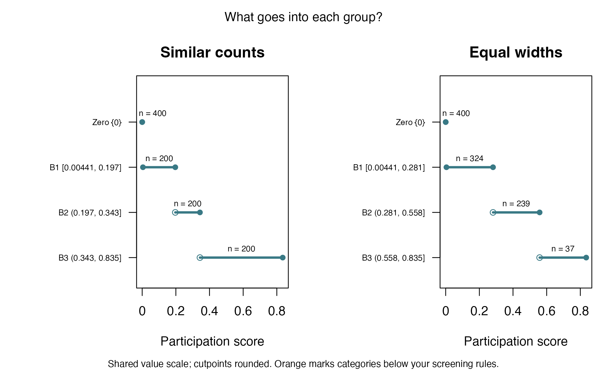

Binning means putting numeric values into groups. Instead of using an exact score, for example, you might use “none”, “low”, and “high”. That can make a comparison easier to explain. It also means treating different values within a group as the same category.
This short tutorial walks through one example, from inspecting the groups to adding them to a dataset. You do not need to bring your own data.
Install the package
Open RStudio and run these lines in the Console. You only need to install the package once, unless you want to update it.
install.packages("remotes")
remotes::install_github("preblek/binwise")binwise needs R 4.1 or later. It is not yet on CRAN, so
install.packages("binwise") is not the installation command
for this version.
Load an example
Run the following code after installing. library() loads
the package for this R session. data() loads a small
example included with it.
library(binwise)
data("binwise_zero", package = "binwise")
head(binwise_zero)
#> id score
#> 1 1 0.18520197
#> 2 2 0.26251397
#> 3 3 0.26480785
#> 4 4 0.09139509
#> 5 5 0.37823970
#> 6 6 0.00000000The example describes a fictional participation score. A score of zero means no participation; positive scores describe how much someone participates.
head() shows the first few rows. Each row is an
observation, and score is the column we will group. The
example has 1,000 observations in total.
If you are new to RStudio, choose File > New File > R Script and copy the code blocks into that script. Select one block at a time and press Command+Enter on a Mac or Ctrl+Enter on Windows. Run the blocks in order.
Look at the proposed groups
We will give zero its own category and divide the positive scores into three groups with roughly equal counts.
groups <- bin_diagnose(
binwise_zero, "score", bins = 3,
separate_zero = TRUE, warn = FALSE
)
groups$bins
#> bin lower upper left_closed right_closed singleton n proportion
#> 1 Zero 0.000000000 0.0000000 TRUE TRUE TRUE 400 0.4
#> 2 B1 0.004407018 0.1966749 TRUE TRUE FALSE 200 0.2
#> 3 B2 0.196674912 0.3430896 FALSE TRUE FALSE 200 0.2
#> 4 B3 0.343089642 0.8349466 FALSE TRUE FALSE 200 0.2
#> sparse sd mean observed_max observed_min
#> 1 FALSE 0.00000000 0.0000000 0.0000000 0.000000000
#> 2 FALSE 0.04694734 0.1217963 0.1959964 0.004407018
#> 3 FALSE 0.04203736 0.2672780 0.3426248 0.197014158
#> 4 FALSE 0.09728007 0.4686261 0.8349466 0.344019411<- saves the result under the name
groups. The quotation marks around "score"
tell the function which column to use. groups$bins opens
the table of categories inside that saved result.
Read the table one row at a time. The lower and upper values describe
a category’s boundaries. n tells you how many observations
it contains. There are 400 zeros, followed by three positive-score
groups of 200 each. The bins = 3 setting applies to the
positive values, so there are four categories altogether.
Print the whole result to see the package’s written assessment.
groups
#> binwise diagnosis of score
#>
#> Assessment
#> * Exact zeros account for 40.00% of finite observations. They are kept in a separate category; interval bins describe positive values.
#> * The largest interval, B1, contains 200 observations (33.33% of observations assigned to intervals). Compare this balance with your intended use of the categories.
#> * The widest observed within-bin range is in B3, from 0.34402 to 0.83495 (58.80% of the full observed range). If distinctions within that range matter, consider additional or custom boundaries there.
#>
#> 1000 finite observations out of 1000 rows
#> 0 missing; 0 infinite; 601 unique finite values
#> 400 exact zeros ( 40 % of finite values)
#> min median mean max sd skewness
#> 0 0.1295 0.1715 0.8349 0.1856 0.8255
#>
#> Percentiles
#> probability value
#> 0.00 0.0000
#> 0.01 0.0000
#> 0.05 0.0000
#> 0.10 0.0000
#> 0.25 0.0000
#> 0.50 0.1295
#> 0.75 0.3025
#> 0.90 0.4476
#> 0.95 0.5206
#> 0.99 0.6463
#> 1.00 0.8349
#>
#> Candidate bins using quantile
#> Requested 3 interval bins; created 3 interval bins and 1 zero category
#> bin lower upper n proportion sparse
#> Zero 0.000000 0.0000 400 0.4 FALSE
#> B1 0.004407 0.1967 200 0.2 FALSE
#> B2 0.196675 0.3431 200 0.2 FALSE
#> B3 0.343090 0.8349 200 0.2 FALSE
#> Intervals include the upper boundary; the first also includes the lower boundary.
#> Exact zeros are assigned separately before applying intervals.
#>
#> Notes
#> * Interval boundaries use positive values only. The zero category is additional to the requested interval bins.
#>
#> These diagnostics describe the supplied data and candidate boundaries.The assessment points out features worth checking. It cannot tell you what zero means in your research. That interpretation comes from your question and your knowledge of the variable.
Compare another way of grouping the values
Perhaps you would rather use intervals of the same width. Compare both choices before deciding.
choices <- bin_compare(
binwise_zero, "score", bins = 3,
methods = c("quantile", "equal_width"), separate_zero = TRUE
)
plot(
choices, type = "boundaries", show_counts = TRUE,
xlab = "Participation score", main = "What goes into each group?",
scheme_labels = c(quantile_3 = "Similar counts", equal_width_3 = "Equal widths")
)
Each horizontal segment shows the range covered by a group. The counts tell you how many observations fall in it. Similar counts do not necessarily mean similar ranges. Equal widths do not necessarily mean similar counts.
Use Plots > Zoom in RStudio if the labels look small. Orange marks identify groups that fall below the package’s count or proportion screening rules. They are a prompt to look more closely, not an automatic rejection of the bins.
Add the chosen categories to your data
Suppose you choose the groups from the first step.
bin_apply() adds them as a new column and keeps the
original score.
with_groups <- bin_apply(
binwise_zero, groups, name = "participation_group"
)
head(with_groups)
#> id score participation_group
#> 1 1 0.18520197 B1
#> 2 2 0.26251397 B2
#> 3 3 0.26480785 B2
#> 4 4 0.09139509 B1
#> 5 5 0.37823970 B3
#> 6 6 0.00000000 Zero
table(with_groups$participation_group)
#>
#> Zero B1 B2 B3
#> 400 200 200 200binwise_zero is unchanged. with_groups is a
new data frame containing the original columns and
participation_group. The groups use the exact boundaries
saved in groups.
What should you conclude?
Separating no participation from some participation has a clear meaning in this example. That is a reason to consider a separate zero category. It is not, by itself, a reason to turn all positive values into low, medium, and high groups.
Ask what you want to compare. If the amount of participation matters, keeping the exact scores may be more useful. If you do choose groups, describe their boundaries and keep the original score available.
Where to go next
The example gallery shows several different situations, including one where bins improve predictions and one where they hide a smooth relationship. The longer tutorial walks through model comparisons and explains their output.
For your own data, replace binwise_zero with your data
frame and "score" with the name of your numeric column. You
can also choose your own boundaries. For example, the code below would
divide a score known to run from 0 to 100 at 25, 50, and 75. Change both
the data name and the boundaries for your setting.
my_groups <- bin_diagnose(
my_data, "score", method = "custom",
breaks = c(0, 25, 50, 75, 100)
)Values at an interior boundary join the interval below it. For example, 25 joins the first interval. The function help explains missing values and values outside your chosen range.